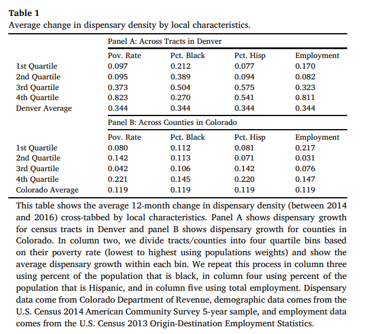

This code: creates a table of dispensary density by socioeconomic factors
matches zip codes to census geocodes
connects to census API
retrieves demographic population data
calculates poverty, race, and employment rates
matches the statistics above with year-over-year changes in dispensaries
generates an overly formatted table showing dispensary YOY growth by socioeconomic quartiles
This section of my methodology was the most exciting for me, yet it was also where I recognized the need to adapt my approach. My first limitation was the challenge of matching dispensary locations to their corresponding census tracts. To achieve this, I would need to obtain each location’s physical address, which was not provided by Colorado.Gov’s dispensary archive. While this information can be accessed for a price through vendors or tediously scraping the web, for the sake of time and sanity, proceeding with county-level data was my best option for completing this project.
Nonetheless, the TIGRIS package’s ability to create maps at the census tract level remains a potent instrument in an analyst’s arsenal. Although the tract level identifiers are not utilized beyond this point, I have included it as a reference for future projects and as part of my Replicating NIMBY journey. Due to the differences in methodology, my figures do not align flawlessly; however, examining the overall trends for congruence remains a worthwhile endeavor.
load packages
Attaching package: 'lubridate'
The following objects are masked from 'package:base':
date, intersect, setdiff, union
Linking to GEOS 3.9.3, GDAL 3.5.2, PROJ 8.2.1; sf_use_s2() is TRUE
To enable caching of data, set `options(tigris_use_cache = TRUE)`
in your R script or .Rprofile.
# list of dispensariesdsps <-as.data.frame(read.csv("~/gvsu/winter 23/CIS 635/NIMBY/cleaning/counting_dispensaries/dps_data_cleaned/dispensary_types_defined.csv"))# list of all zip codes with at lease one dispensarydsps_zips <-as.data.frame(read.csv("~/gvsu/winter 23/CIS 635/NIMBY/cleaning/counting_dispensaries/dps_data_cleaned/dsps_zips.csv"))#county geocodes scraped from Wikipediacounty_codes <- (read.csv("~/gvsu/winter 23/CIS 635/NIMBY/cleaning/density tables/county_FIPS_codes.csv"))
spatial join between dispensary locations and geocodes
At this stage, the zip codes are my main geographical identifier for my dispensary data frame. In an attempt to find the tract level data, I tapped into the Tigris package. adapted from “tigris”
match the files to the county codes with join
Code
# time to add the spacial data to my dispensary list!dsps$zip <-as.character(dsps$zip) # convert_back to charactersdsps<-left_join(dsps, dsps_geos, by ="zip")dsps$county_code <-as.integer(dsps$county_code) # using an intgers to join other datasets# a lovely document with dispensary tracts and county codesdsps<-left_join(dsps, county_codes, by ="county_code")# saving for later in case I can use the tract level datawrite.csv(dsps, "~/gvsu/winter 23/CIS 635/NIMBY/cleaning/counting_dispensaries/dps_data_cleaned/dispenaries_tracts.csv")
the paper looks at the poverty rate, percent black, percent Hispanic, and the employment rate demographic data comes from the U.S. Census 2014 American Community Survey 5-year sample, and employment data comes from the U.S. Census 2013 Origin-Destination Employment Statistics
I’ve already established an API census_api_key(“[API removed for privacy]”, install = TRUE)
#I've already established an API census_api_key#("\[API removed for privacy\]", install= TRUE)demo_factors <-get_acs(year =2014,geography ="county",state ="CO",variables =c(population_14 ="B01001_001",pov_base_14 ="B17001_001", # Universe: Population for whom poverty status Is determined (base of % poverty)pov_pop_14 ="B17001_002", # Income in the Past 12 Months Below Poverty Levelemployeed ="B23025_002", # employed in labor for (16+)black ="B03002_004",hispanic ="B03002_012"),output ="wide")
Getting data from the 2010-2014 5-year ACS
Code
# i look forward to the day when the racial makeup of a zip code isn't an assumed identifier for povertycolnames(demo_factors)
match the change in dispensary density with demographics
Here I join two datasets using “GEOID”, aggregate the annual population and demographic factors by geographic ID. Next, I created new variables representing the total population and economic indicators for each geographic ID. The resulting dataset has one row per unique geographic ID.
Code
# switching from merging to left joins since it's easier to readdemo_factors$GEOID <-as.integer(demo_factors$GEOID)dsps_summed$GEOID <-as.integer(dsps_summed$GEOID)dsps_yoy_demos <-left_join(demo_factors, dsps_summed, by ="GEOID")colnames(dsps_yoy_demos)
dsps_yoy_demos <- dsps_yoy_demos %>%mutate_at(vars(15:18), replace_na, replace =0) %>%group_by(GEOID) %>%# add the total inssummarize(pop_2014 =sum(population_14E),pov_pop_14 =sum(pov_pop_14E),pov_base =sum(pov_base_14E),black_pop =sum(blackE),hispanic_pop =sum(hispanicE),employeed_pop =sum(employeedE),`2013`=sum(`2013`),`2014`=sum(`2014`),`2015`=sum(`2015`),`2016`=sum(`2016`) )
year-over-year function
One of former professors told me, if you have do write something three times then it’s time to write a function! The year over year variance is another crucial aspect of NIMBY’s model. This function will be applied to several variables
Code
# make a function to calculate the year over year changesyoy_avg_function <-function(df) {# calculate growth rates df$yoy_2014 <- ((df$`2014`- df$`2013`) / df$`2013`) df$yoy_2015 <- ((df$`2015`- df$`2014`) / df$`2014`) df$yoy_2016 <- ((df$`2016`- df$`2015`) / df$`2015`) # average growth rate and round to 3 decimal places df$dsp_yoy_avg <-rowMeans(df[, c("yoy_2014", "yoy_2015", "yoy_2016")], na.rm =TRUE) df <- df %>%mutate_at(vars(starts_with("dsp")), funs(round(., 3))) # roundreturn(df)}
calculate the year-over-year change average in dispensaries for the state of Colorado
Warning: `funs()` was deprecated in dplyr 0.8.0.
ℹ Please use a list of either functions or lambdas:
# Simple named list: list(mean = mean, median = median)
# Auto named with `tibble::lst()`: tibble::lst(mean, median)
# Using lambdas list(~ mean(., trim = .2), ~ median(., na.rm = TRUE))
find the race, poverty and employment rates at the county level
Code
# make the rates# create the percentages:dsps_yoy_demos <- dsps_yoy_demos %>%#create percentages mutate(pct_poverty_rate = (pov_pop_14/pov_base),pct_black = (black_pop/ pop_2014),pct_hispanic = (hispanic_pop/ pop_2014)) %>%#roundmutate_at(vars(starts_with("pct")), funs(round(., 3)))
Warning: `funs()` was deprecated in dplyr 0.8.0.
ℹ Please use a list of either functions or lambdas:
# Simple named list: list(mean = mean, median = median)
# Auto named with `tibble::lst()`: tibble::lst(mean, median)
# Using lambdas list(~ mean(., trim = .2), ~ median(., na.rm = TRUE))
create quartiles to recreate table1

table1 from the original paper is my second reference at cross comparing my results against NIMBY’s
Using the ntile function, I classify the dispensary year-over-year changes by counties quartiles of the various variables
Warning: `funs()` was deprecated in dplyr 0.8.0.
ℹ Please use a list of either functions or lambdas:
# Simple named list: list(mean = mean, median = median)
# Auto named with `tibble::lst()`: tibble::lst(mean, median)
# Using lambdas list(~ mean(., trim = .2), ~ median(., na.rm = TRUE))
Code
# save the data for the crime per capita calculationswrite.csv(dsps_yoy_qtiles, "~/gvsu/winter 23/CIS 635/NIMBY/cleaning/counting_dispensaries/dps_data_cleaned/dsps_yoy_qtiles.csv")
transform the data into a tabluar format to be presented in a simple summarized table
Code
# poverty quartiles by dispensary densitypoverty_qts <- dsps_yoy_qtiles %>%select( qrt_pov,`2013`,`2014`,`2015`,`2016` ) %>%group_by(qrt_pov) %>%# add the total inssummarize(`2013`=sum(`2013`),`2014`=sum(`2014`),`2015`=sum(`2015`),`2016`=sum(`2016`) ) %>% yoy_avg_function %>%select(1,9)# I checked and my total match across quartiles, and look similar to the area graph data# black population quartiles by dispensary densityblack_qts <- dsps_yoy_qtiles %>%select( qrt_black,`2013`,`2014`,`2015`,`2016` ) %>%group_by(qrt_black) %>%# add the total inssummarize(`2013`=sum(`2013`),`2014`=sum(`2014`),`2015`=sum(`2015`),`2016`=sum(`2016`) ) %>% yoy_avg_function %>%select(1,9)# Hispanic quartiles by dispensary densityhispanic_qts <- dsps_yoy_qtiles %>%select( qrt_hispanic,`2013`,`2014`,`2015`,`2016` ) %>%group_by(qrt_hispanic) %>%# add the total inssummarize(`2013`=sum(`2013`),`2014`=sum(`2014`),`2015`=sum(`2015`),`2016`=sum(`2016`) ) %>% yoy_avg_function %>%select(1,9)# employment quartiles by dispensary densityemployment_qts <- dsps_yoy_qtiles %>%select( qrt_employment,`2013`,`2014`,`2015`,`2016` ) %>%group_by(qrt_employment) %>%# add the total inssummarize(`2013`=sum(`2013`),`2014`=sum(`2014`),`2015`=sum(`2015`),`2016`=sum(`2016`) ) %>% yoy_avg_function %>%select(1,9)
create a table of all my variables:
Code
# put everything together density_table1 <- poverty_qts %>%left_join(black_qts, by =c("qrt_pov"="qrt_black")) %>%left_join(hispanic_qts, by =c("qrt_pov"="qrt_hispanic")) %>%left_join(employment_qts, by =c("qrt_pov"="qrt_employment"))# rename the columnscolnames(density_table1) <-c("Quartile", "Poverty Rate", "Pct. Black", "Pct. Hispanic", "Employment", "Colorado Average")combined_table <-bind_rows(density_table1 , colorado_yoy_average)